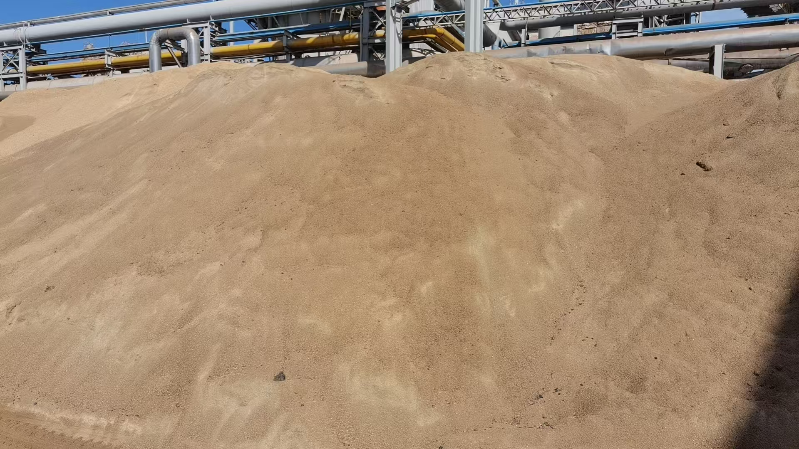
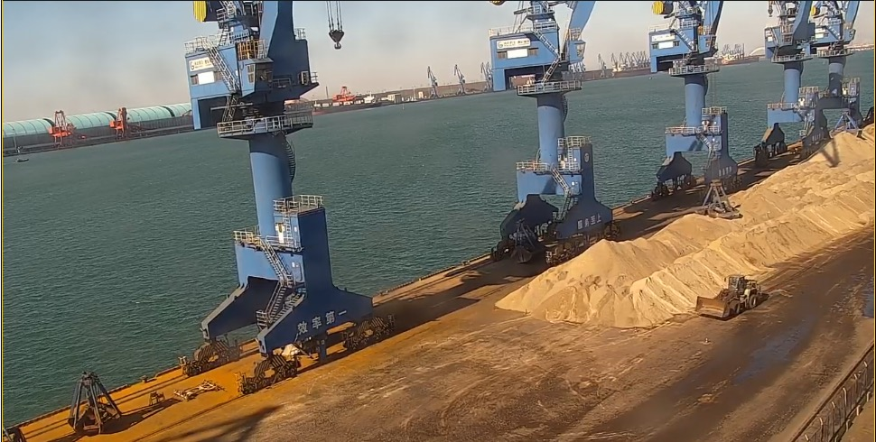
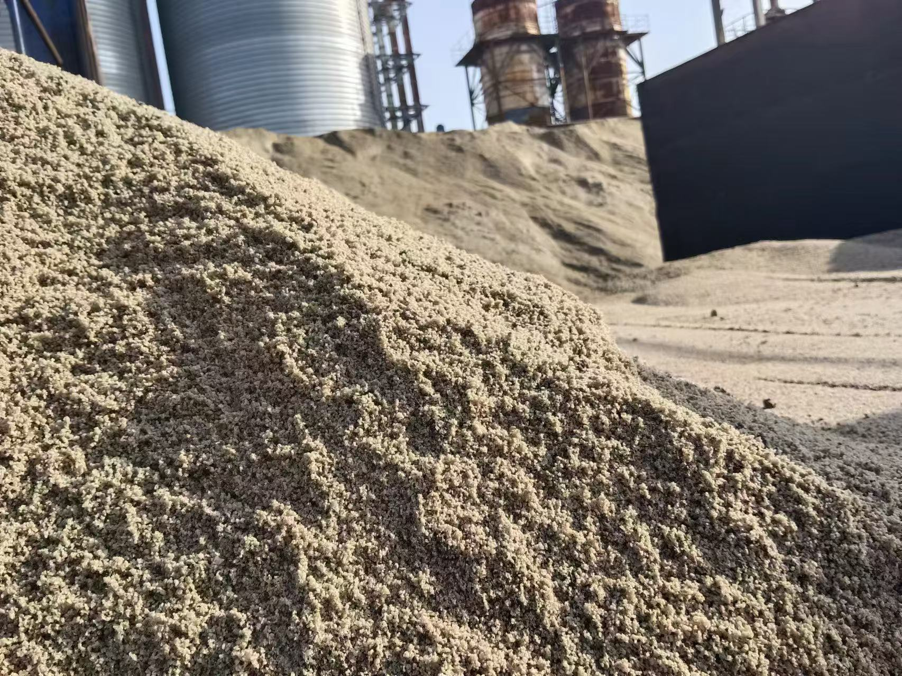

China Hosts 2026 International Cement Low-Carbon Forum as Global Blended Cement Market Eyes $129 Billion by 2036
The 2026 International Cement Low-Carbon Development Forum opened in Fujian Province on 13 May, gathering global industry leaders under the China Cement Association banner. At the same time, analysts project the global blended cement market will grow from USD 82.5 billion in 2026 to USD 129.4 billion by 2036. For suppliers of GBFS, GGBFS and other supplementary cementitious materials, the message is clear: low-carbon cement is no longer a niche. It is the mainstream trajectory.
中国主办 2026 国际水泥低碳发展论坛，全球掺配水泥市场瞄准 2036 年 1,294 亿美元
2026 国际水泥低碳发展论坛于 5 月 13 日在福建省开幕，在中国水泥协会旗帜下汇聚全球行业领袖。与此同时，分析师预测全球掺配水泥市场将从 2026 年的 825 亿美元增长至 2036 年的 1,294 亿美元。对 GBFS、GGBFS 及其他补充胶凝材料供应商而言，信息是明确的：低碳水泥不再是小众选项，而是主流轨迹。

On 13 May 2026, the International Cement Low-Carbon Development Forum officially opened in Fujian Province, organised by the China Cement Association. The event brought together international industry leaders, innovators, and policy experts under a unified banner: accelerating the decarbonisation of cement production. While the forum covered a range of technical pathways — from carbon capture utilisation and storage to alternative fuels — the dominant commercial thread running through every session was the same. Reducing clinker content is now the most immediate and scalable lever the industry has, and supplementary cementitious materials are the primary mechanism for doing so.
1. Why the forum matters for SCM suppliers
China produces more cement than any other country, and its policy direction ripples through global supply chains with disproportionate force. When the China Cement Association organises an international forum focused explicitly on low-carbon development, it is not a ceremonial exercise. It is a signal to domestic producers, regulators, and trading partners that the national cement strategy is being recalibrated around carbon intensity. For suppliers of ground granulated blast furnace slag, fly ash, and other SCMs, this creates a direct demand-side pull. Chinese cement producers under pressure to meet tightening emissions standards need more feedstock that can replace clinker without compromising strength or durability. GGBFS, with its proven performance record and lower embedded carbon, is positioned at the centre of that demand.
The forum also reinforced a point that is increasingly evident across Asia: sustainability policy and procurement economics are converging. Low-carbon cement is no longer being adopted only because of regulatory mandates. It is being adopted because, in a world of high energy costs and carbon pricing, it makes direct economic sense. When Chinese industry associations put their institutional weight behind blended cement and SCM expansion, the effect is not limited to domestic procurement. It influences the expectations of Chinese export partners, EPC contractors working abroad, and joint-venture cement plants in Southeast Asia and Africa that rely on Chinese technical standards.

2. The $129 billion blended cement forecast: structural demand, not a cycle
Parallel to the forum, market analysts at Future Market Insights released an updated long-range outlook for the global blended cement market. The projection is substantial: growth from USD 82.5 billion in 2026 to USD 129.4 billion by 2036, representing a compound annual growth rate of 4.6%. What makes this figure significant is not only its scale but its composition. The growth is expected to be driven by rising adoption of sustainable construction materials, expanding infrastructure modernisation projects, and increasing utilisation of supplementary cementitious materials — with major players including Holcim, UltraTech Cement, Heidelberg Materials, Anhui Conch, and Cemex leading regional expansion across China, India, Europe, and North America.
For slag suppliers, the blended cement market forecast is effectively a downstream demand map. Every percentage point of clinker replaced by slag, fly ash, or pozzolan in a blended cement formulation translates into feedstock demand at the source. With a 4.6% annual growth rate sustained over a decade, the cumulative volume of SCM required is far larger than current supply chains are configured to deliver. That gap represents both a commercial opportunity and a supply chain challenge. The suppliers who can scale production, maintain chemical consistency, and deliver reliably through port infrastructure will be the ones capturing market share as the blended cement sector expands.

3. What exporters should watch in the China and global markets
Three developments deserve close attention in the coming months. First, the follow-up policy announcements from the China Cement Association and the Ministry of Industry and Information Technology. If the Fujian forum is followed by concrete blending-ratio targets or carbon-intensity benchmarks for domestic producers, the demand for imported and domestic slag will shift quickly. Second, the expansion of blended cement lines by major Chinese producers like Anhui Conch and CNBM. These groups have the capital and distribution networks to move blended cement from niche product to default specification — which dramatically multiplies their SCM procurement requirements. Third, the Indian and Southeast Asian markets, where Holcim and UltraTech are actively expanding blended cement capacity. These regions are already import-dependent for clinker and are increasingly open to slag imports as blending ratios rise.
For SENLAN Trading, operating from Tangshan Caofeidian with direct port access and consistent GBFS and GGBFS supply capability, the convergence of these signals is straightforward. The China low-carbon forum confirms that the largest cement-producing nation in the world is accelerating its clinker-reduction agenda. The global blended cement forecast quantifies the decade-long demand expansion that agenda implies. And the activity of major producers from Holcim to UltraTech to CNBM shows that the shift is already moving from policy discussion to procurement action. The question for suppliers is not whether this demand will materialise. It is whether their supply chain can deliver the quality, volume, and reliability that buyers are already starting to require.
2026 年 5 月 13 日，由中国水泥协会组织的国际水泥低碳发展论坛在福建省正式开幕。该活动汇聚了国际行业领袖、创新者和政策专家，围绕统一主题：加速水泥生产脱碳。虽然论坛涵盖了从技术路径到替代燃料的广泛议题，但贯穿每场会议的主导商业主线是相同的：降低熟料含量是该行业目前最即时、最具规模的杠杆，而补充胶凝材料正是实现这一目标的主要机制。
1. 论坛为何对 SCM 供应商意义重大
中国的水泥产量超过任何其他国家，其政策方向在全球供应链中产生的连锁反应具有不成比例的影响力。当中国水泥协会明确组织一场以低碳发展为主题的国际论坛时，这不是仪式性活动，而是向国内生产商、监管机构和贸易伙伴发出的信号：国家水泥战略正在围绕碳强度重新校准。对磨细粒化高炉矿渣、粉煤灰及其他 SCM 供应商而言，这创造了直接的需求拉动。面临收紧排放标准压力的中国水泥生产商需要更多能在不牺牲强度或耐久性的前提下替代熟料的原料。GGBFS 凭借其经过验证的性能记录和更低的隐含碳，正处于该需求的中心位置。
论坛还强化了一个在亚洲日益明显的观点：可持续性政策与采购经济正在趋同。低碳水泥不再仅因监管强制而被采用。在能源成本高企和碳定价的背景下，它在直接经济意义上是合理的。当中国行业协会将其制度性影响力置于掺配水泥和 SCM 扩张之后，其影响不仅限于国内采购。它还影响中国出口伙伴的期望、在海外工作的 EPC 承包商，以及依赖中国技术标准的东南亚和非洲合资水泥厂的预期。
2. 1,294 亿美元掺配水泥预测：结构性需求，而非周期
与论坛同期，Future Market Insights 的市场分析师发布了全球掺配水泥市场的更新长期展望。预测数据可观：从 2026 年的 825 亿美元增长至 2036 年的 1,294 亿美元，复合年增长率为 4.6%。使这一数字重要的不仅是其规模，还有其构成。增长预计将受到可持续建筑材料采用率上升、基础设施现代化项目扩张以及补充胶凝材料使用增加的驱动——主要参与者包括 Holcim、UltraTech Cement、Heidelberg Materials、海螺水泥和 Cemex，它们正在中国、印度、欧洲和北美引领区域扩张。
对矿渣供应商而言，掺配水泥市场预测实际上是一张下游需求地图。在掺配水泥配方中，每一百分点被矿渣、粉煤灰或火山灰替代的熟料，都会在源头转化为原料需求。以 4.6% 的年增长率持续十年，所需 SCM 的累积体量远大于当前供应链的配置交付能力。这一缺口既代表商业机遇，也代表供应链挑战。能够扩产、保持化学一致性并通过港口基础设施可靠交付的供应商，将是在掺配水泥行业扩张中 capture 市场份额的那些人。
3. 出口商在中国及全球市场应关注什么
未来数月有三项进展值得密切关注。第一，中国水泥协会及工信部的后续政策 announcement。如果福建论坛之后出台具体的掺配比例目标或国内生产商碳强度基准，对进口及国产矿渣的需求将快速转变。第二，海螺水泥和中国建材等主要中国生产商的掺配水泥生产线扩张。这些集团拥有资本和分销网络，能将掺配水泥从小众产品推向默认规格——这将成倍放大其 SCM 采购需求。第三，Holcim 和 UltraTech 正在积极扩张掺配水泥产能的印度及东南亚市场。这些地区本就依赖熟料进口，随着掺配比例上升，它们对矿渣进口的开放度正在提高。
对森蓝贸易而言，在唐山曹妃甸运营、拥有直通港口及稳定 GBFS 与 GGBFS 供应能力，这些信号的汇聚是明确的。中国低碳论坛确认全球最大水泥生产国正在加速其熟料减量议程。全球掺配水泥预测量化了该议程所隐含的十年需求扩张。而从 Holcim 到 UltraTech 到中国建材等主要生产商的活动表明，这一转变已经从政策讨论走向采购行动。对供应商而言，问题不在于这一需求是否会兑现，而在于其供应链能否交付买家已经开始要求的品质、体量和可靠性。